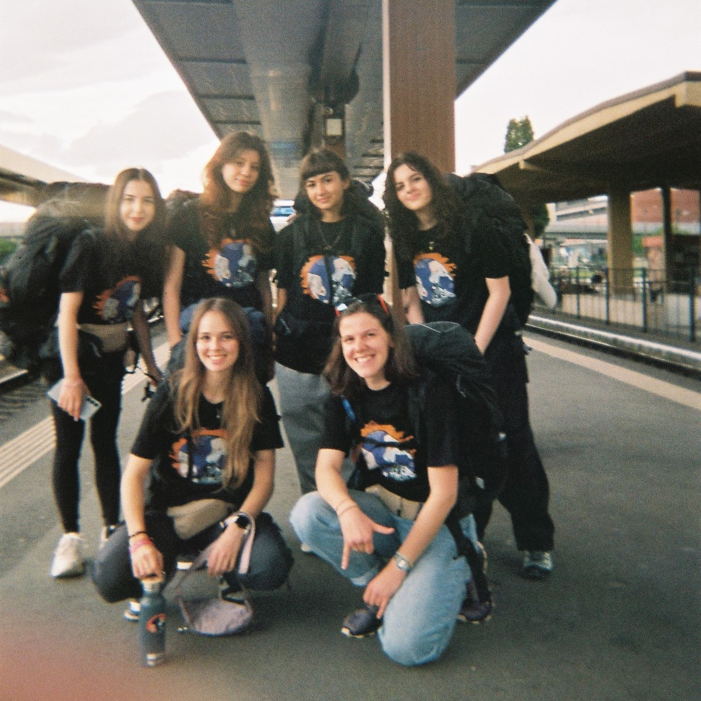

No items found.

DiscoverEU Inclusion
2 săptămâni, 4 țări, 7 orașe, 19 trenuri, 4048 kilometri...
Atât a însemnat aventura noastră prin Europa.
Cu rucsacul în spate și emoția în suflet, patru tinere curajoase, alături de două însoțitoare, au pornit într-o călătorie care a fost mult mai mult decât o listă de destinații prin intermediul implicării în proiectul DiscoverEU Inclusion.
Au luat pulsul Europei din vagoanele trenurilor, au adunat povești și au descoperit culturi noi la fiecare oprire. Fiecare oraș a venit cu atmosfera lui, fiecare drum cu provocările și micile lui bucurii. Dincolo de kilometri, această experiență le-a arătat cât de important e să fii deschis, să îndrăznești și să vezi lumea cu ochi noi.
A fost, de fapt, o călătorie a descoperirilor – despre oameni, despre locuri și, mai ales, despre noi înșine.
Proiect realizat în parteneriat cu Fundația Națională pentru Tineret (FNT).